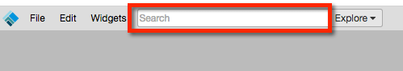
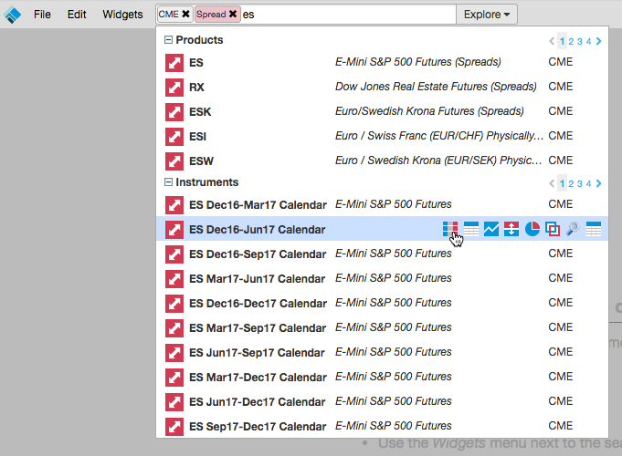

TT provides you with the capability to quickly find instruments and trade them in your workspace. After creating or opening a workspace, you can use the Search functionality to search for an instrument and open a widget
.
TT allows you to enter a contextual search based on your input. For example, if you enter "CME" as an exchange name and "Spread" as a product type, the Search feature will save CME and Spread as the context for your search, and filter your instrument search results.

Note: Intercommodity spread products are listed in the TT platform with a pipe character "|" between product names. For example, the soybean crush on CME is listed as ZM|ZL|ZS.